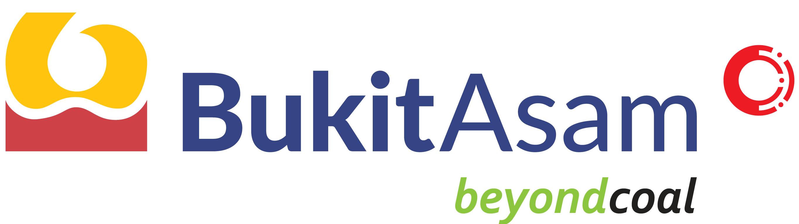
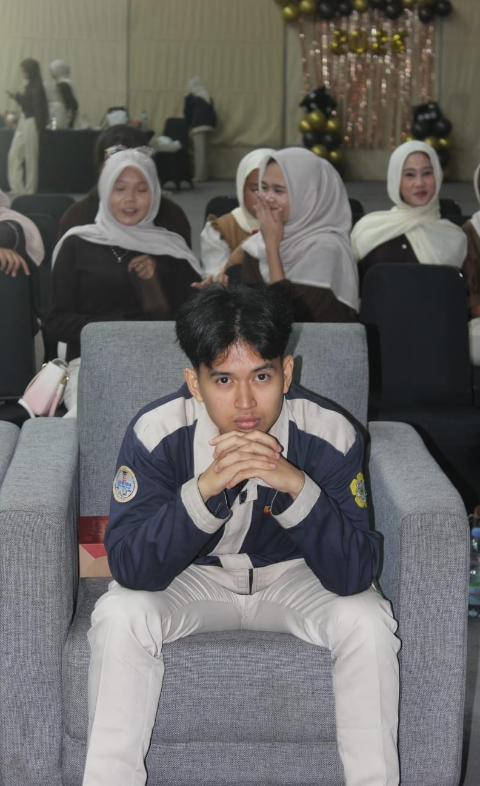

Mahasiswa D3 Teknik Listrik Polsri dengan spesialisasi sistem tenaga listrik, instalasi industri, kontrol otomasi PLC, dan proteksi tenaga. Dipercaya memegang amanah sebagai Ketua Bidiksiba (Beasiswa Pendidikan Mahasiswa Sekitar Bukit Asam), mengoordinasikan mahasiswa penerima beasiswa unggulan dari perusahaan BUMN energi PT Bukit Asam Tbk (PTBA).


Menggabungkan ketelitian teknik elektro presisi tinggi dengan kepemimpinan organisasi sosial terdepan bersama PT Bukit Asam Tbk.
Sebagai mahasiswa di Politeknik Negeri Sriwijaya (Polsri) — salah satu politeknik negeri terbaik di Indonesia dengan tradisi pendidikan vokasi yang solid — saya mendalami bidang D3 Teknik Listrik dengan fokus pada perancangan panel kontrol, sistem proteksi tenaga listrik, motor-motor listrik 3-fasa, serta integrasi programmable logic controller (PLC).
Pendidikan vokasi Polsri menuntut jam terbang laboratorium dan bengkel kerja listrik yang intensif, melatih saya memahami standar regulasi ketat seperti PUIL 2011 (Persyaratan Umum Instalasi Listrik) serta keselamatan kerja K3 Listrik.
Perancangan Single Line Diagram, panel distribusi MDP/SDP, dan kalkulasi beban seimbang 3 fasa.
Pemrograman logic ladder PLC Omron/Siemens, relay kendali, sensor industri, dan sistem starter motor.
"Program Bidiksiba merupakan komitmen bantuan pendidikan prestisius dari PT Bukit Asam Tbk (PTBA) untuk mencetak generasi unggul yang siap berkontribusi bagi kemajuan industri energi nasional."
Dipercaya sebagai Ketua Bidiksiba, saya bertanggung jawab memimpin koordinasi para mahasiswa penerima beasiswa, mengorganisir berbagai program pengembangan kapasitas, pengabdian masyarakat, kepemimpinan karakter, serta menjembatani sinergi komunikasi antara mahasiswa dengan manajemen CSR PT Bukit Asam Tbk.
Pendidikan vokasi keteknikan listrik dengan proporsi praktik langsung 60% dan teori 40%, membina kompetensi siap kerja berstandar industri.
Kurikulum berfokus pada penguasaan instalasi ketenagalistrikan tegangan rendah hingga menengah, mesin-mesin listrik AC/DC, elektronika daya, sistem transmisi dan gardu induk, analisis proteksi, pemeliharaan transformator, serta otomasi berbasis PLC.
Indikator kompetensi teknik listrik terkalibrasi melalui jam praktik laboratorium, proyek lapangan, dan pengalaman kepemimpinan.
Geser slider tegangan (Voltage) dan arus (Current) untuk melihat kalkulasi beban daya listrik secara langsung pada dial meter digital.
Pengakuan kompetensi resmi di bidang keselamatan kelistrikan, otomasi, dan program kepemimpinan beasiswa PTBA.
Kompetensi penerapan keselamatan dan kesehatan kerja pada instalasi listrik tegangan rendah & menengah sesuai regulasi Kemnaker RI.
Pengujian kelayakan pemrograman PLC, instalasi sensor industri, serta troubleshooting panel starter motor induksi.
Seleksi ketat program beasiswa penuh bagi putra-putri berprestasi daerah untuk menempuh studi teknik di Politeknik Negeri Sriwijaya.
Apresiasi atas dedikasi memimpin organisasi penerima beasiswa dan mengoordinasikan program sosial kemasyarakatan.